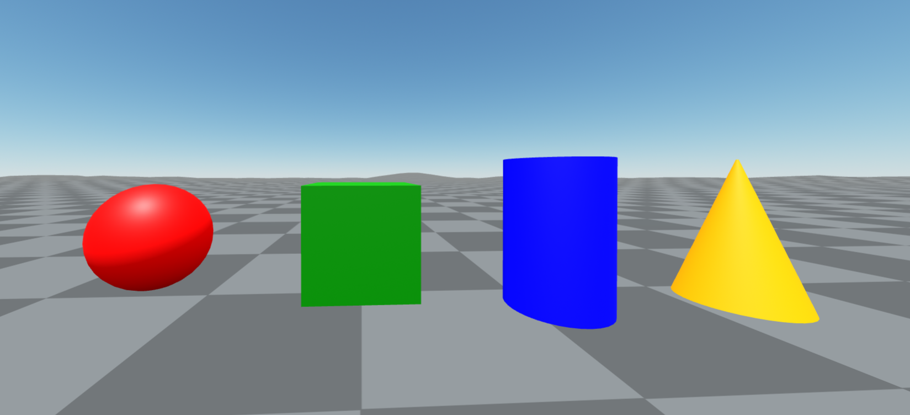
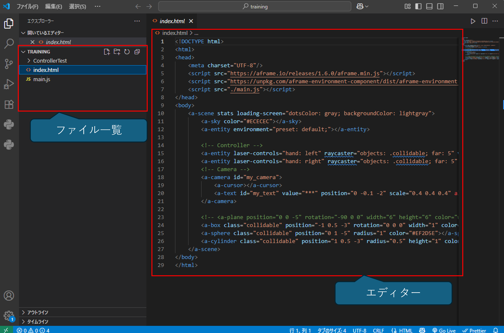
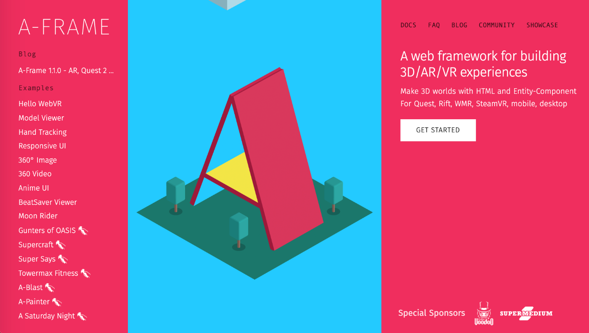
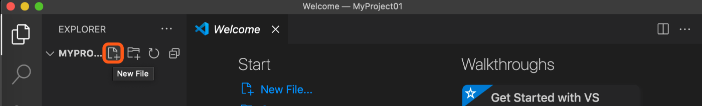
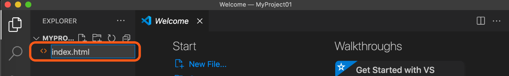
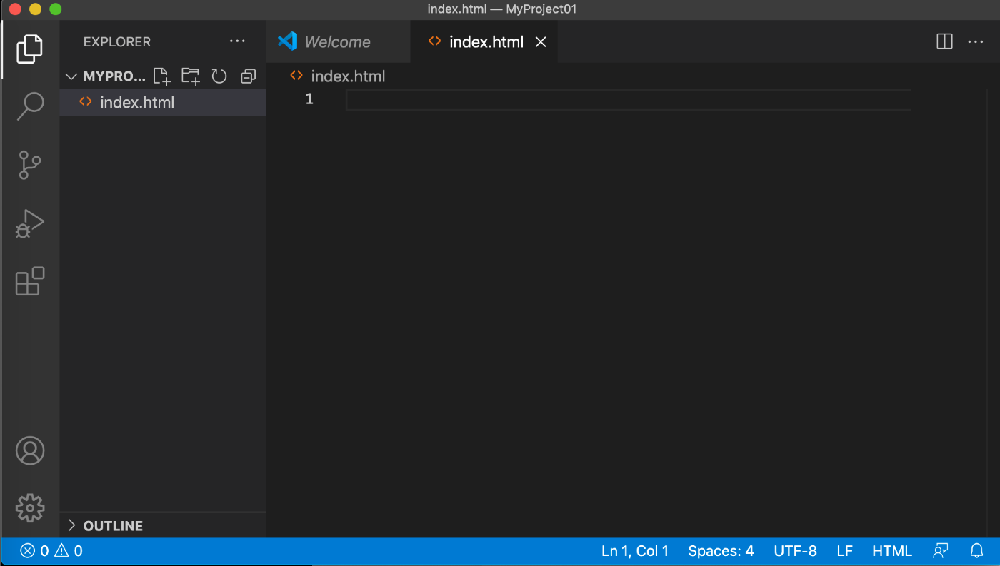
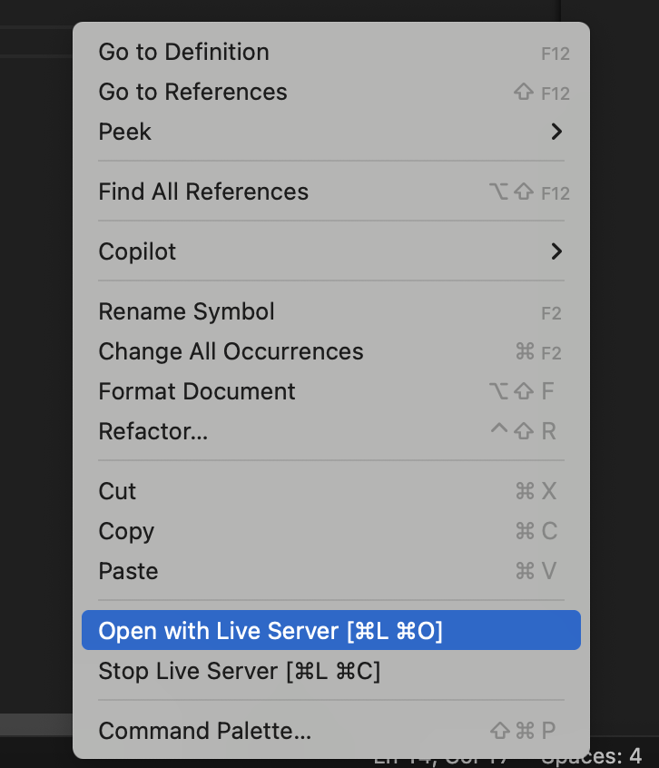
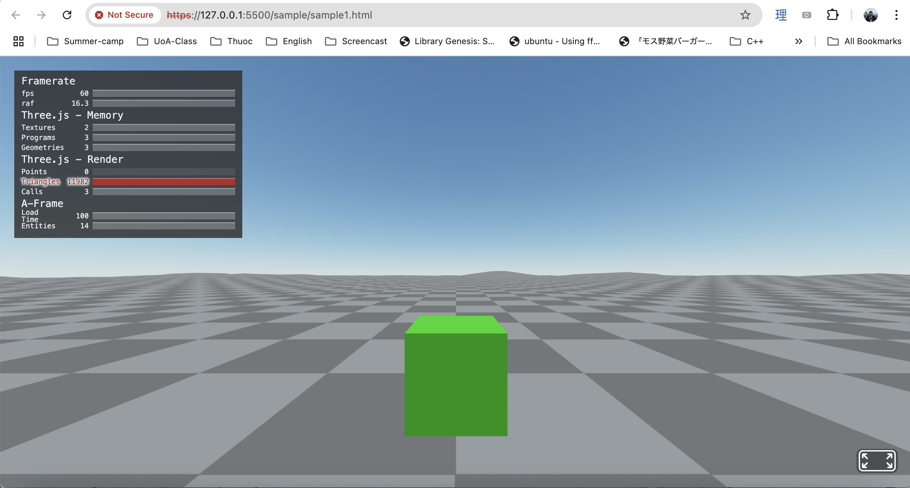

本章ではA-Frameの使い方について、その手順をまとめていきます。最低限のコードで動く事を優先させますので、機能の詳細について、説明を省いている箇所がありますのでご注意ください。
最終的な完成イメージは下記の通りです。

VScodeとは、Microsoftが開発した無料のソースコードエディタです。多くのプラグインが用意されており、HTML、CSS、JavaScriptなどのWeb開発に特化した機能を持っています。

A-Frameは、Webブラウザで気軽にVRコンテンツを作る事ができる、大人気の定番ライブラリです。HTMLのようなマークアップ言語を使用して3Dシーンを記述でき、JavaScriptでインタラクションを追加することができます。
A-Frameは、WebXRという技術を使っており、気軽にVRコンテンツを作る事ができます。 HTMLだけで構築することも可能であり、初学者さんにもとても理解しやすいフレームワークになっています。
更に、Oculus Rift、HTC Vive等、WebXRに対応しているVRデバイスを用意すれば、そのままVR体験をする事ができます。
A-Frameでは、<a-box>タグなど、3Dオブジェクトを配置するためのタグが用意されています。以下に代表的なタグを紹介します。
<a-box>タグは、3D空間に立方体を配置するためのタグです。
| 属性名 | 説明 | 記述例 |
|---|---|---|
| position | オブジェクトの位置 (x, y, z) | position="0 1 2" |
| rotation | オブジェクトの回転 (x, y, z) | rotation="0 45 0" |
| color | オブジェクトの色 | color="blue" |
| width / height / depth | サイズ指定 | width="1" height="1" depth="1" |
| src | テクスチャ設定 | src="url_to_texture.jpg" |
<a-box position="-1 0.5 -3" rotation="0 45 0" color="#4CC3D9" width="1" height="1" depth="1" src="url_to_texture.jpg" ></a-box>
<a-sphere>タグは、3D空間に球体を配置するためのタグです。
| 属性名 | 説明 | 記述例 |
|---|---|---|
| position | オブジェクトの位置 (x, y, z) | position="0 1 2" |
| rotation | オブジェクトの回転 (x, y, z) | rotation="0 45 0" |
| color | オブジェクトの色 | color="blue" |
| radius | 球体の半径 | radius="1" |
| src | テクスチャ設定 | src="url_to_texture.jpg" |
<a-sphere position="-1 0.5 -3" rotation="0 45 0" color="#4CC3D9" radius="1" src="url_to_texture.jpg" ></a-sphere>
<a-cylinder>タグは、3D空間に円柱を配置するためのタグです。
| 属性名 | 説明 | 記述例 |
|---|---|---|
| position | オブジェクトの位置 (x, y, z) | position="0 1 2" |
| rotation | オブジェクトの回転 (x, y, z) | rotation="0 45 0" |
| color | オブジェクトの色 | color="blue" |
| radius | 円柱の半径 | radius="1" |
| height | 円柱の高さ | height="1" |
| src | テクスチャ設定 | src="url_to_texture.jpg" |
<a-cylinder position="-1 0.5 -3" rotation="0 45 0" color="#4CC3D9" radius="1" height="2" src="url_to_texture.jpg" ></a-cylinder>
| タグ名 | 説明 | 使用例 |
|---|---|---|
| a-circle | 円の形状を持つオブジェクト | Link |
| a-plane | 平面を表すオブジェクト | Link |
| a-ring | リング（円環）または円盤の形状 | Link |
| a-cone | 円錐の形状を持つオブジェクト | Link |
| a-cone | 円錐の形状を持つオブジェクト | Link |
| a-text | 3D空間にテキストを表示するオブジェクト | Link |
| a-video | 3D空間に動画を表示するオブジェクト | Link |
| a-image | 3D空間に画像を表示するオブジェクト | Link |
| a-light | 光源を表すオブジェクト | Link |
A-Frameを使ってVRの仮想環境を簡単に作れます。まず、プロジェクト名の上にマウスカーソルを合わせ、"New File"ボタンをクリックします。

ファイル名は、"index.html"としましょう。
これでindex.htmlファイルが作成されました。

次に、下記のコードをコピーしてindex.htmlファイルに貼り付けます。
<!DOCTYPE html>
<html>
<head>
<meta charset="UTF-8"/>
<script src="https://aframe.io/releases/1.6.0/aframe.min.js"></script>
<script src="https://unpkg.com/aframe-environment-component/dist/aframe-environment-component.min.js"></script>
</head>
<body>
<a-scene stats loading-screen="dotsColor: gray; backgroundColor: lightgray">
<a-entity environment="preset: default;"></a-entity>
<a-entity id="player">
<a-entity id="camera" camera position="0 1.6 0" wasd-controls look-controls></a-entity>
</a-entity>
<a-box position="0 1 -3" rotation="0 0 0" width="1" height="1" depth="1" color="green"></a-box>
</a-scene>
</body>
</html>
ファイルを保存したら、エディターの上にマウスを置き、右クリックして"Open With Live Server"を選択します．

そすると、ブラウザが起動し、下記のように仮想空間が表示されます。

画面左上に表示されている"stats"に注目してください。ここには、A-Frameの実行に関する情報が表示されています。
マウスのドラッグでカメラの方向制御、キーボードの"WASD"でVR空間を移動する事もできるので試してみましょう。
まず、A-Frameのライブラリを読み込むために、<head>タグ内にAFrameコンポネント aframe.min.jsとAFrame環境コンポネントaframe-environment-component.min.jsを追加します。
<head>
<meta charset="UTF-8"/>
<script src="https://aframe.io/releases/1.6.0/aframe.min.js"></script>
<script src="https://unpkg.com/aframe-environment-component/dist/aframe-environment-component.min.js"></script>
</head>
次に、<a-scene>タグを使って仮想空間を定義します。このタグは、A-Frameの中でも最も重要なタグで、VR空間そのものを表します。
<a-scene stats loading-screen="dotsColor: gray; backgroundColor: lightgray"></a-scene>
次に、<a-entity>タグを使って環境を設定します。ここでは、<a-entity environment>を使用して、 環境のプリセットを"デフォルト"に設定しています。
<a-entity environment="preset: default;"></a-entity>
次に、<a-camera>タグを使ってカメラの位置と向きを設定します。
<a-entity id="player">
<a-entity id="camera" camera position="0 1.6 0" wasd-controls look-controls></a-entity>
</a-entity>
ここでは、カメラの位置（position属性）を(0, 1.6, 0)に設定しています。これは、カメラが地面から1.6メートルの高さにあることを意味します。
最後に、<a-box>タグを使って立方体を配置します。オブジェクトの位置やサイズ、色を対応する属性（アトリビュート）で指定することができます。
<a-box position="0 1 -3" width="1" height="1" depth="1" color="blue"></a-box>
ここでは、立方体の位置(position)を(0, 1, -3)に設定し、幅（width）を1、高さ（height）を1、奥行き（depth）を1、色（color）を青にしています。
次に、様々なオブジェクトを配置してみましょう。以下のコードをコピーして、index.htmlファイルのa-boxタグの後に追加してください。
<a-sphere position="-2 1 -3" radius="0.5" color="red"></a-sphere>
<a-cylinder position="2 1 -3" radius="0.5" height="1.5" color="blue"></a-cylinder>
<a-cone position="4 1 -3" radius-bottom="0.5" height="1.5" color="orange"></a-cone>
上記のコード追加して、index.htmlファイルを保存してください。以下のように仮想空間にオブジェクトが配置されるかを確認してください。
このように、様々なオブジェクトを配置することができます。オブジェクトの位置や色、サイズを変更して、自由に仮想空間をカスタマイズしてみましょう。